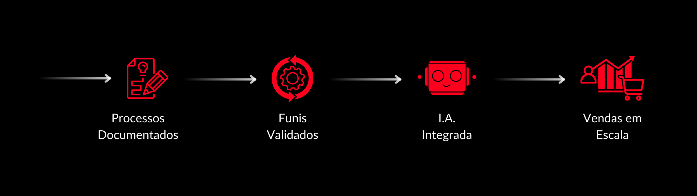
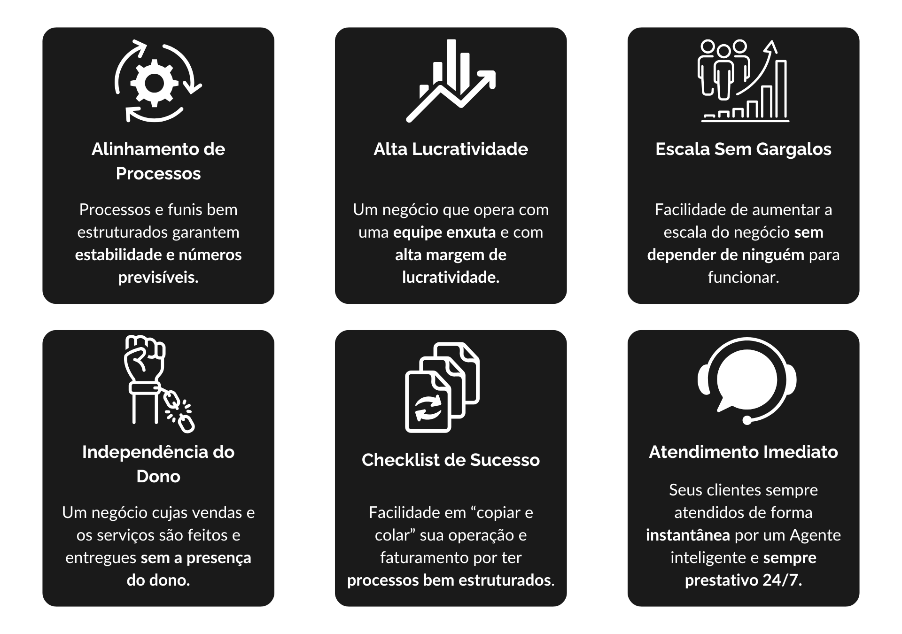

Se você é EMPRESÁRIO e tem alguns desses problemas abaixo
Essa solução é pra você:
Se você se identifica com algum desses problemas, talvez seja hora de pensar em automatizar seus processos com I.A.
Hoje, as empresas que estão crescendo com rapidez, são as que estão investindo em automação e inteligência artificial...
Mesmo tendo um produto ou serviço de qualidade, a falta de automação e sistemas robustos impede o crescimento rápido e sustentável.
Começe a utilizar Agentes I.A. na sua empresa e veja seu negócio decolar!
Sem ele, seu negócio não sai do lugar.
Método Noble AI.


No sistema Noble AI, os fundamentos são definições e
estruturações dos processos do seu negócio, a criação de agentes de automação nesses processos e a integração com sistemas
dentro da sua empresa.
Todas essas etapas bem estruturadas permitirão a sua empresa crescer e prosperar
mesmo quando você não está presente.
Utilizando o poder da Inteligência Artificial.
Obtenha a acessoria que vai levar seu negócio ao próximo patamar com a solução Noble I.A.!
Semanalmente liberamos alguns horários restritos para uma consultoria de pré-avaliação focada em empresários que desejam obter maiores resultados em seus negócios.
Nela nós damos um direcionamento personalizado para aplicar a automação e inteligência artificial no seu negócio, e ter mais lucratividade, previsibilidade e escalabilidade.
Informe seus dados para continuar.
A Noble Company é uma empresa especializada em negócios digitais, que auxilia outras empresas a otimizarem seus negócios com automações e inteligência artificial, aumentando seus retornos sobre investimento (ROI).
Fundada por Maicon Douglas Zeferino e Luiz Eduardo Rubio Mendes, a Noble Company acumula mais de 3 anos de expêriencia com negócios digitais e fisicos e já ajudou dezenas de empresas a crescerem e prosperarem.
Após alcançarem um faturamento pra seus clientes acumulado de quase 8 digitos, Maicon e Luiz dedicam-se atualmente em assessorar empresários na utilização de automações e inteligência artificial para alavancar seus negócios.
Na consultoria vamos te dar um direcionamento sobre como aplicar automações e inteligência artificial no seu negócio pode te ajudar a ter mais lucratividade, previsibilidade e escalabilidade.
Geralmente, as primeiras melhorias podem ser notadas em poucas semanas, mas o tempo total depende da complexidade dos processos da empresa.
O diagnóstico tem uma duração média de 30 minutos, tempo suficiente para analisarmos os pontos críticos do seu negócio e como a Noble AI pode ajudar.
A call é feita 100% online através da plataforma segura do Google Meet com um de nossos especialistas. Caso a consultoria não te agrade ou não for o que você esperava, você pode sair a qualquer momento sem ressentimentos.
Você tem a liberdade de convidar quem você quiser para participar da consultoria, mas recomendamos que todos os decisores da sua empresa estejam presentes, como sócios por exemplo.